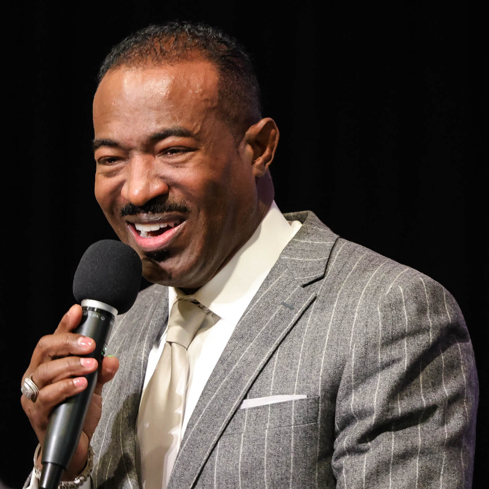

Watch Latest LIFE Sermon
About LIFE
Our History
-

2009
Write the Vision, Make it Plain
The Lord led Terence Merritt, M.D. to establish a ministry in Atlanta. The ministry was to be called the LIFE Church (John 10:10b “I am come that they might have life, and that they might have it more abundantly.”). Without any outside financial support and without any initial members, Dr. Merritt leased a building in the Candler Park neighborhood and began renovating it. This location, 344 Candler Park Drive, NE, became the birth place of LIFE Church. Dr. Merritt spent many hours in prayer in the building, before any services were held. LIFE began as a house of prayer, and continues to be so today.
-

2010
And the Vision Shall Speak...
January 20, Dr. Merritt began leading weekly Wednesday evening Bible Study, and in February, he began having Sunday services. On March 7, the doors of LIFE were opened for the first time, and seven persons joined the new ministry. For the first year, LIFE gathered for worship every Wednesday evening and every Sunday afternoon. At the end of 2010, God instructed Pastor Merritt to move LIFE’s service to Sunday morning, beginning the first Sunday of 2011.
-

2012-2016
Exceeding Abundatly, Above All
In December 2012, Pastor Merritt prophesied that 2013 would be a year of swift, sudden transitions for better, and in July, Dr. Merritt found what would become LIFE’s new home in Southwest Atlanta. In August, LIFE closed on the facility, and in September, LIFE moved into its new home. The Father favored the three year old ministry to purchase the 25,000 square foot facility and to obtain a mortgage for over $1 Million. The entire time LIFE leased the property in Candler Park, it remained an active listing on the MLS for sell, but there was not a single contract placed on the property, until after LIFE finalized the contract on its new facility. In January 2016, LIFE officially closed on the property directly across the street from the main campus, and called it LIFE Plaza. This is the second acquisition of LIFE church.
-

Today
LIFE, More Abundantly
God has tremendously blessed and favored LIFE. LIFE’s ministries, which include the intercessory ministry, the children’s ministry, teen mentorship, the prison ministry, feeding and clothing of the needy, an employment network, and benevolent assistance, reach and impact beyond the walls of LIFE. LIFE Church is a place where "miracles are common". Since the inception of the ministry, there have been many reported miracles and deliverances. Testimonies of healing are prevalent throughout LIFE. Lives are being radically transformed for the better, and to date, the church is growing by leaps and bounds. 8 years later, we are still holding to our original mission "Passionately Loving God and Intentionally Loving People.”
Meet Our Pastor
Terence A. Merritt, M.D.
Senior Pastor
Terence A. Merritt was born in Waycross, GA and reared in St. Petersburg, Florida. While in elementary school, he was labeled a slow-learner. However, after giving his life to the Lord, he began excelling academically and was placed in the class for the gifted in the fifth grade.
He became the first black valedictorian of his 50-year-old high school and was named the top graduating male in all 14 high schools of Pinellas County. The recipient of a full academic scholarship to attend Morehouse College in Atlanta, he graduated Phi Beta Kappa, Magna Cum Laude.
Dr. Merritt pursued a career in medicine at the prestigious Johns Hopkins School of Medicine in Baltimore, Maryland, also on a full academic scholarship. After extensive clinical work in the field of Psychiatry, he graduated with a Doctorate in Medicine. He was employed for several years in medical management of one the nation’s largest pharmaceutical companies.
Dr. Merritt grew up attending Pentecostal Temple Church of God in Christ (COGIC) in St. Petersburg with his family. He accepted the call to the ministry while at Morehouse College. During his freshman year, he began “Abundant LIFE,” a Bible study for Morehouse and Spelman students. Many students were introduced to the Lord; several of which are in ministry today. Dr. Merritt was later ordained in the COGIC, while in medical school. An anointed and gifted teacher/preacher, he has ministered nationally and internationally in churches and in conferences, as well as conducted health awareness seminars.
For eight years, Dr. Merritt served the Church of God in Christ in the Jurisdiction of Brazil as Superintendent of the Fifth District, under the leadership of the late Bishop Samuel Moore. There, he oversaw the growth and expansion of the church in north Brazil. Under his leadership, the oldest church in the district was purchased, and eight new ministries were birthed. In January 2010, Dr. Merritt established LIFE Church in the Candler Park Neighborhood of Atlanta, Georgia by leading weekly Wednesday evening Bible Study. Sunday Services commenced shortly thereafter in February. God has tremendously blessed and favored LIFE. Ministries encompassing teen mentorship, prison ministry, food and clothing for the needy and benevolent assistance in the community. In August of 2013, LIFE Church made its first acquisition. The then three year old ministry purchased a 25,000 square foot facility in Southwest Atlanta. LIFE Church has taken in more than 1000 members in the past eight years. Lives are being radically transformed for the better. LIFE Church has truly become a place where “miracles are common”.
In addition to his pastoral responsibilities, Dr. Merritt serves in
the Jurisdiction of North Central Georgia of the COGIC as an Administrative Assistant to Bishop Joseph Hogan and as a District Superintendent over the Zoe District. In recognition and honor of the unique contributions Dr. Merritt has made in ministry, he was inducted into the prestigious MLK Board of Preachers of Morehouse College; and in 2016, he received the prestigious LIFEtime Achievement Award from President Barack Obama.